不管面试 Java、C/C++、Python 等开发岗位，TCP 的知识点可以说是必问的了。
任 TCP 虐我千百遍，我仍待 TCP 如初恋。
遥想小林当年校招时常因 TCP 面试题被刷，真是又爱又恨……
过去不会没关系，今天就让我们来消除这份恐惧，微笑着勇敢的面对它吧！
所以小林整理了关于 TCP 三次握手和四次挥手的面试题型，跟大家一起探讨探讨。
问题导读
TCP 基本认识
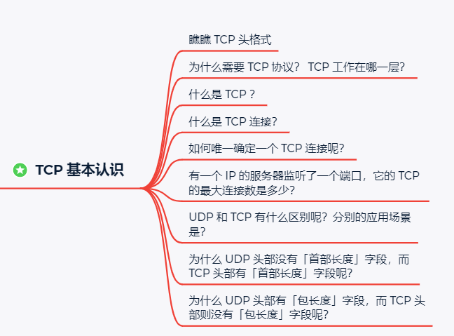
TCP 连接建立
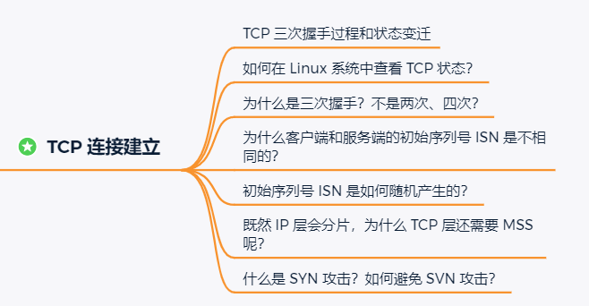
TCP 连接断开
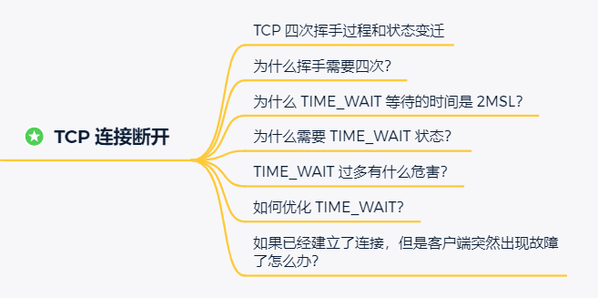
Socket 编程
PS：本次文章不涉及 TCP 流量控制、拥塞控制、可靠性传输等方面知识，这些留在下篇哈！
TCP 基本认识
瞧瞧 TCP 头格式
我们先来看看 TCP 头的格式，标注颜色的表示与本文关联比较大的字段，其他字段不做详细阐述。
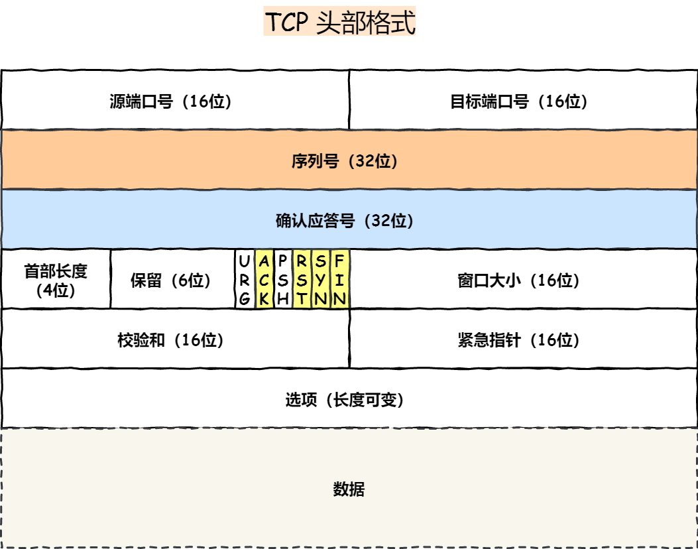
TCP 头格式
其中两个关键字段的含义如下：
- 序列号：在建立连接时由计算机生成的随机数作为其初始值，通过 SYN 包传给接收端主机，每发送一次数据，就「累加」一次该「数据字节数」的大小。用来解决网络包乱序问题。
- 确认应答号：指下一次「期望」收到的数据的序列号，发送端收到这个确认应答以后可以认为在这个序号以前的数据都已经被正常接收。用来解决不丢包的问题。
控制位
TCP 头部中的控制位（也叫标志位）有 6 个：
- URG：紧急位，表示紧急指针有效
- ACK：确认位，表示确认应答号有效
- PSH：推送位，提示接收方尽快把数据交给应用层
- RST：复位位，表示重置连接
- SYN：同步位，表示请求建立连接并同步初始序列号
- FIN：结束位，表示请求关闭连接
为什么需要 TCP 协议？TCP 工作在哪一层？
IP 层是「不可靠」的，它不保证网络包的交付、不保证网络包的按序交付、也不保证网络包中的数据的完整性。
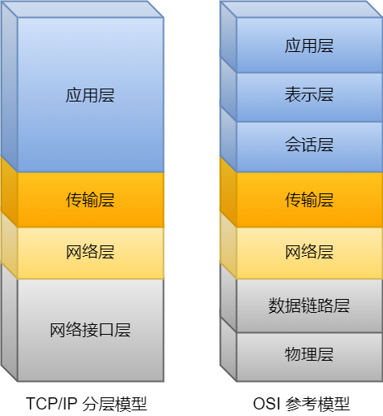
OSI 参考模型与 TCP/IP 的关系
如果需要保障网络数据包的可靠性，那么就需要由上层（传输层）的 TCP 协议来负责。
因为 TCP 是一个工作在传输层的可靠数据传输的服务，它能确保接收端接收的网络包是无损坏、无间隔、非冗余和按序的。
什么是 TCP？
TCP 是面向连接的、可靠的、基于字节流的传输层通信协议。
什么是 TCP 连接？
我们来看看 RFC 793 是如何定义「连接」的：
Connections:
The reliability and flow control mechanisms described above require that TCPs initialize and maintain certain status information for each data stream.
The combination of this information, including sockets, sequence numbers, and window sizes, is called a connection.
简单来说就是，用于保证可靠性和流量控制维护的某些状态信息，这些信息的组合，包括 Socket、序列号和窗口大小称为连接。
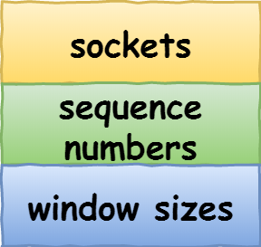
所以我们可以知道，建立一个 TCP 连接是需要客户端与服务器端达成上述三个信息的共识。
如何唯一确定一个 TCP 连接呢？
TCP 四元组可以唯一地确定一个连接，四元组包括如下：
- 源地址
- 源端口
- 目的地址
- 目的端口
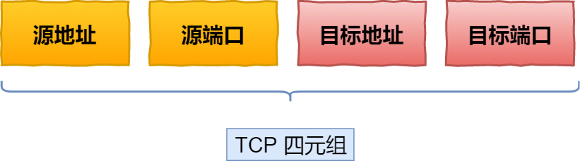
TCP 四元组
源地址和目的地址的字段（32 位）是在 IP 头部中，作用是通过 IP 协议发送报文给对方主机。
源端口和目的端口的字段（16 位）是在 TCP 头部中，作用是告诉 TCP 协议应该把报文发给哪个进程。
有一个 IP 的服务器监听了一个端口，它的 TCP 的最大连接数是多少？
服务器通常固定在某个本地端口上监听，等待客户端的连接请求。
因此，客户端 IP 和端口是可变的，其理论值计算公式如下：
最大 TCP 连接数 = 客户端 IP 数 × 客户端端口数
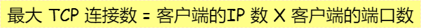
对 IPv4，客户端的 IP 数最多为 2 的 32 次方，客户端的端口数最多为 2 的 16 次方，也就是服务端单机最大 TCP 连接数，约为 2 的 48 次方。
当然，服务端最大并发 TCP 连接数远不能达到理论上限。
UDP 和 TCP 有什么区别呢？分别的应用场景是？
UDP 不提供复杂的控制机制，利用 IP 提供面向「无连接」的通信服务。
UDP 协议真的非常简单，头部只有 8 个字节（64 位），UDP 的头部格式如下：
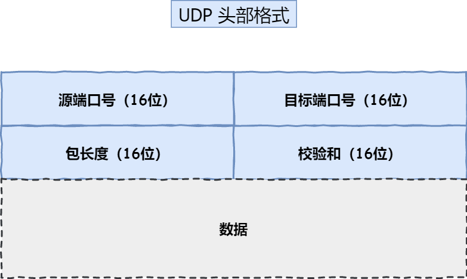
UDP 头部格式
TCP 和 UDP 区别：
- 连接：TCP 是面向连接的，传输数据前要先建立连接；UDP 是无连接的，即刻传输数据
- 服务对象：TCP 仅支持一对一的通信；UDP 支持一对一、一对多、多对多的交互通信
- 可靠性：TCP 保证数据不丢失、不重复、按序到达；UDP 是尽最大努力交付，不保证可靠
- 拥塞控制、流量控制：TCP 有拥塞控制和流量控制机制，网络拥塞时会降低发送速率；UDP 没有，即使网络拥塞了也不会降低发送速率
- 首部开销：TCP 首部最短 20 字节、最长 60 字节；UDP 首部固定 8 字节
关于两者的详细对比，可以看看本站的《TCP 与 UDP》。
TCP 和 UDP 应用场景：
由于 TCP 是面向连接，能保证数据的可靠性交付，因此经常用于：
- HTTP/HTTPS 网页通信
- FTP 文件传输
- SMTP/POP3 邮件收发
由于 UDP 面向无连接，它可以随时发送数据，再加上 UDP 本身的处理既简单又高效，因此经常用于：
- DNS、DHCP、NTP 等包总量较少的通信
- 视频、音频等多媒体通信
- 广播通信
为什么 UDP 头部没有「首部长度」字段，而 TCP 头部有「首部长度」字段呢？
原因是 TCP 有可变长的「选项」字段，而 UDP 头部长度则是不会变化的，无需多一个字段去记录 UDP 的首部长度。
为什么 UDP 头部有「包长度」字段，而 TCP 头部则没有「包长度」字段呢？
先说说 TCP 是如何计算负载数据长度的：
TCP 数据长度 = IP 总长度 − IP 首部长度 − TCP 首部长度
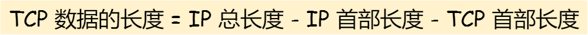
其中 IP 总长度和 IP 首部长度，在 IP 首部格式是已知的。TCP 首部长度，则是在 TCP 首部格式已知的，所以就可以求得 TCP 数据的长度。
大家这时就奇怪了问：“UDP 也是基于 IP 层的呀，那 UDP 的数据长度也可以通过这个公式计算呀？为何还要有「包长度」呢？”
这么一问，确实感觉 UDP 「包长度」是冗余的。但为了网络设备硬件设计和处理方便，首部长度需要是 4 字节的整数倍。
如果去掉 UDP 「包长度」字段，UDP 首部就只剩 6 字节，不是 4 字节的整数倍了。所以小林觉得，这可能是为了补全 UDP 首部长度是 4 字节的整数倍，才补充了「包长度」字段。
TCP 连接建立
TCP 三次握手过程和状态变迁
TCP 是面向连接的协议，所以使用 TCP 前必须先建立连接，而建立连接是通过三次握手进行的。
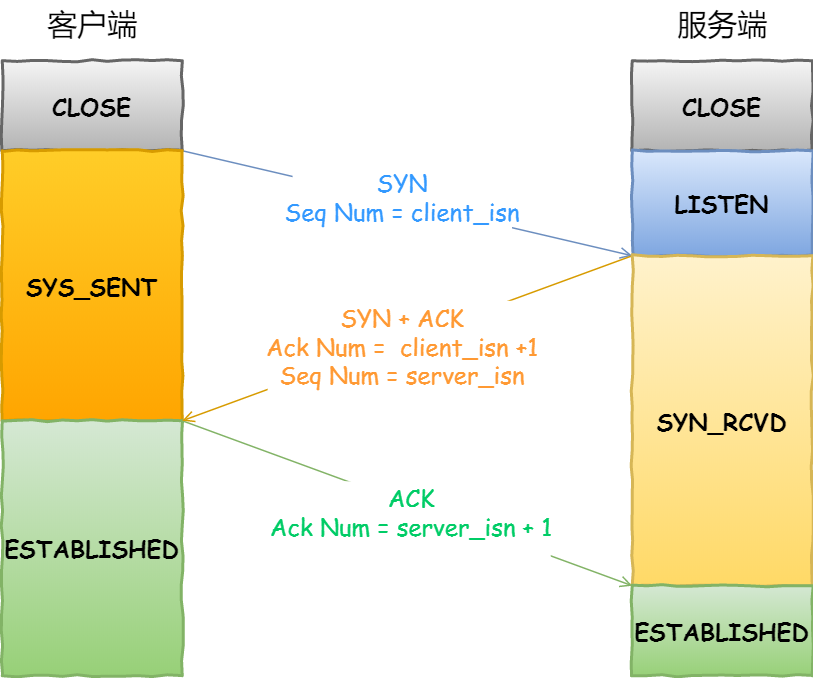
TCP 三次握手
一开始，客户端和服务端都处于 CLOSED 状态；服务端开始监听某个端口后，进入 LISTEN 状态。
三次握手的过程如下：
- 第一次握手：客户端发送 SYN 报文（
seq = client_isn），之后进入SYN_SENT状态 - 第二次握手：服务端收到 SYN 报文后，回复 SYN + ACK 报文（
ack = client_isn + 1，seq = server_isn），进入SYN_RCVD状态 - 第三次握手：客户端收到 SYN + ACK 报文后，回复 ACK 报文（
ack = server_isn + 1），进入ESTABLISHED状态；服务端收到 ACK 后也进入ESTABLISHED状态
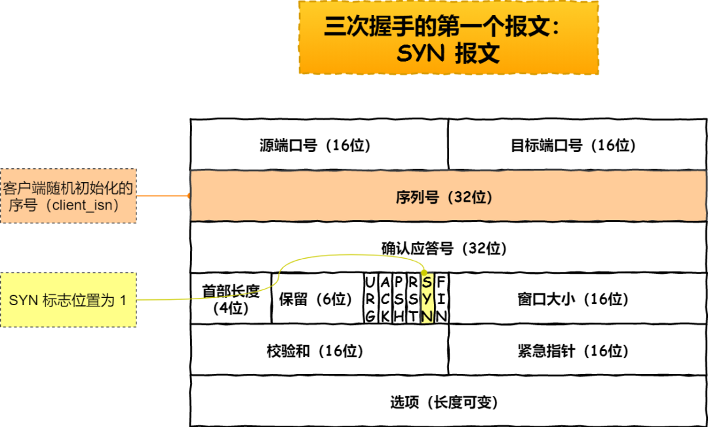
第一个报文 —— SYN 报文
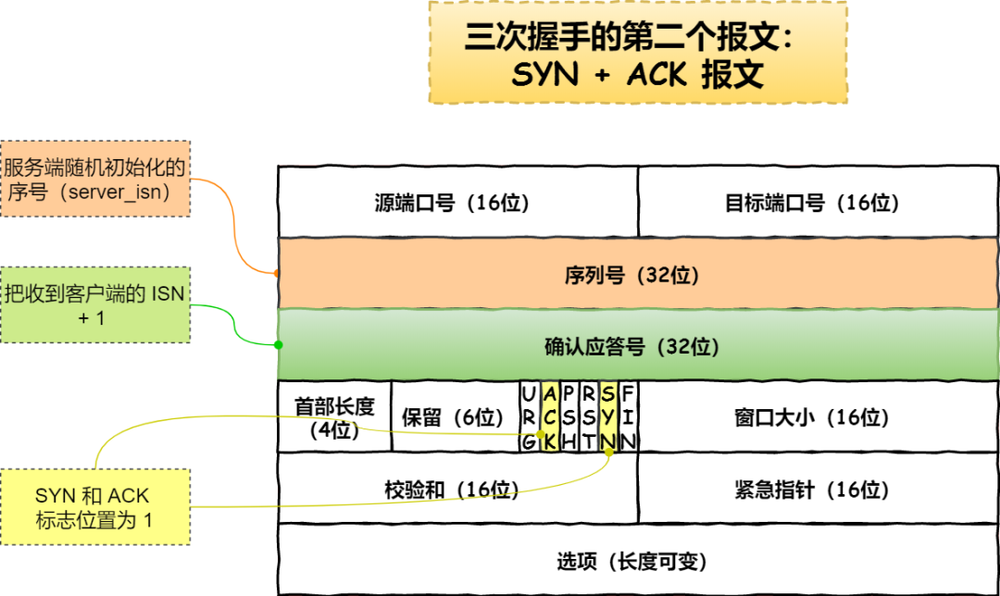
第二个报文 —— SYN + ACK 报文
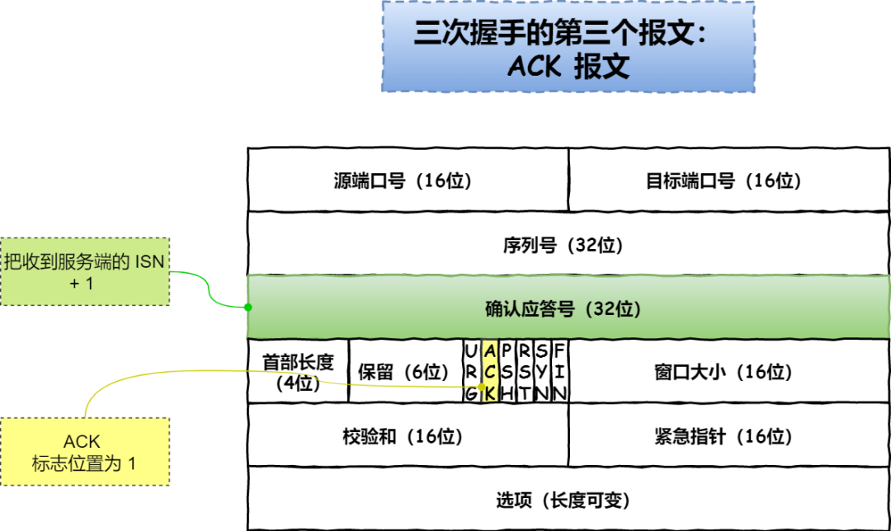
第三个报文 —— ACK 报文
从上面的过程可以发现第三次握手是可以携带数据的，前两次握手是不可以携带数据的，这也是面试常问的题。
一旦完成三次握手，双方都处于 ESTABLISHED 状态，至此连接就已建立完成，客户端和服务端就可以相互发送数据了。
如何在 Linux 系统中查看 TCP 状态？
TCP 的连接状态查看，在 Linux 可以通过 netstat -napt 命令查看。
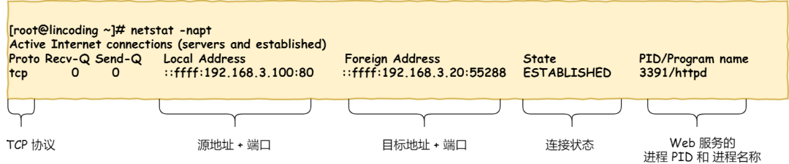
TCP 连接状态查看
为什么是三次握手？不是两次、四次？
相信大家比较常回答的是：“因为三次握手才能保证双方具有接收和发送的能力。”
这回答是没问题，但这回答是片面的，并没有说出主要的原因。
在前面我们知道了什么是 TCP 连接。
所以，重要的是为什么三次握手才可以初始化 Socket、序列号和窗口大小并建立 TCP 连接。
接下来以三个方面分析三次握手的原因：
原因一：避免历史连接
我们来看看 RFC 793 指出的 TCP 连接使用三次握手的首要原因：
The principle reason for the three-way handshake is to prevent old duplicate connection initiations from causing confusion.
简单来说，三次握手的首要原因是为了防止旧的重复连接初始化造成混乱。
网络环境是错综复杂的，往往并不是如我们期望的一样，先发送的数据包，就先到达目标主机，反而它很骚，可能会由于网络拥堵等乱七八糟的原因，会使得旧的数据包，先到达目标主机，那么这种情况下 TCP 三次握手是如何避免的呢？
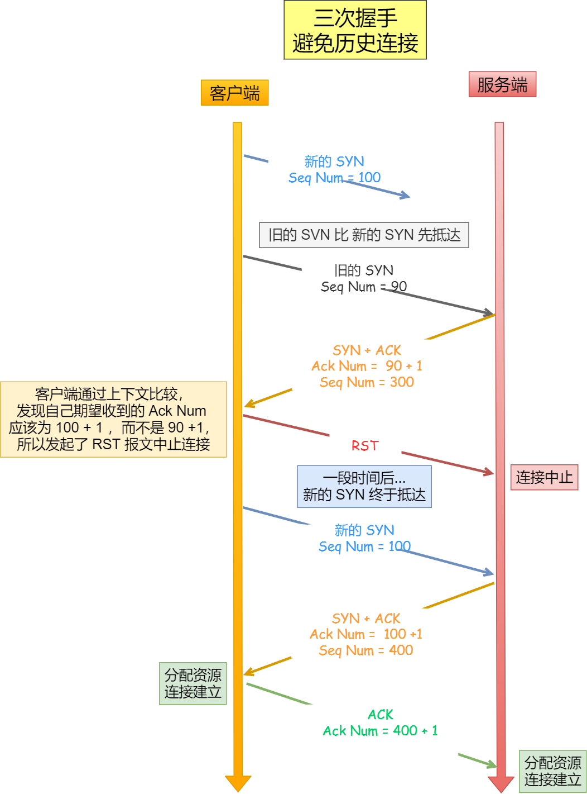
三次握手避免历史连接
客户端连续发送多次 SYN 建立连接的报文，在网络拥堵等情况下：
- 如果「旧 SYN」先到达服务端，服务端回复 SYN + ACK 报文后，客户端发现收到的确认号对不上，就能判断出这是历史连接，于是发送 RST 报文给服务端，终止这一次连接
- 之后客户端再发送新的 SYN 报文，正常完成三次握手
如果是两次握手，服务端回复 ACK 后连接就算建立了，客户端即便事后发现是历史连接，也没有机会阻止；三次握手则把最后的判断权留给了客户端（发送方）——它准备发送第三次报文时，有足够的上下文来判断当前连接是否是历史连接，是的话就发送 RST 终止这一次连接。
所以，TCP 使用三次握手建立连接的最主要原因是防止历史连接初始化了连接。
原因二：同步双方初始序列号
TCP 协议的通信双方，都必须维护一个「序列号」，序列号是可靠传输的一个关键因素，它的作用：
- 接收端可以去除重复的数据包
- 接收端可以根据序列号按序接收数据包
- 接收端可以标识发送端发送了哪些数据包（接收端回复 ACK 时会带上确认号）
可见，序列号在 TCP 连接中占据着非常重要的作用，所以当客户端发送携带「初始序列号」的 SYN 报文的时候，需要服务端回一个 ACK 应答报文，表示客户端的 SYN 报文已被服务端成功接收，那当服务端发送「初始序列号」给客户端的时候，依然也要得到客户端的应答回应，这样一来一回，才能确保双方的初始序列号能被可靠的同步。
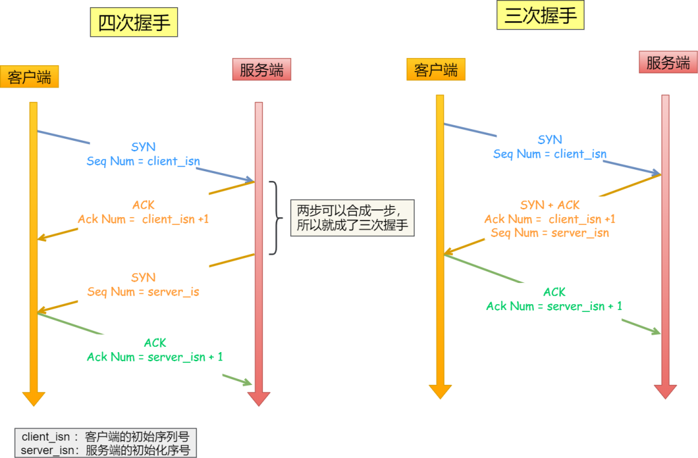
四次握手与三次握手
四次握手其实也能够可靠的同步双方的初始化序号，但由于第二步和第三步可以优化成一步，所以就成了「三次握手」。
而两次握手只保证了一方的初始序列号能被对方成功接收，没办法保证双方的初始序列号都能被确认接收。
原因三：避免资源浪费
如果只有「两次握手」，当客户端的 SYN 请求连接在网络中阻塞，客户端没有接收到 ACK 报文，就会重新发送 SYN，由于没有第三次握手，服务器不清楚客户端是否收到了自己发送的建立连接的 ACK 确认信号，所以每收到一个 SYN 就只能先主动建立一个连接，这会造成什么情况呢？
如果客户端的 SYN 阻塞了，重复发送多次 SYN 报文，那么服务器在收到请求后就会建立多个冗余的无效连接，造成不必要的资源浪费。
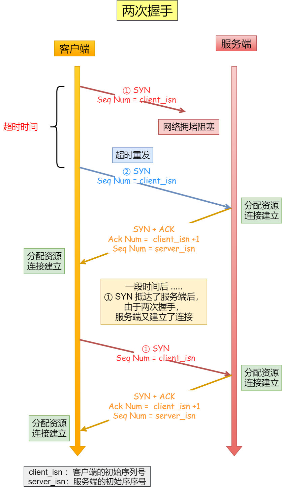
两次握手会造成资源浪费
即两次握手会造成消息滞留情况下，服务器重复接受无用的连接请求 SYN 报文，而造成重复分配资源。
小结
TCP 建立连接时，通过三次握手能防止历史连接的建立，能减少双方不必要的资源开销，能帮助双方同步初始化序列号。序列号能够保证数据包不重复、不丢弃和按序传输。
不使用「两次握手」和「四次握手」的原因：
- 「两次握手」：无法防止历史连接，会造成资源浪费，也无法保证双方的初始序列号都能被同步
- 「四次握手」：三次通信就已经能完成双方初始序列号的同步，四次反而会增加不必要的报文开销
为什么客户端和服务端的初始序列号 ISN 是不相同的？
因为网络中的报文会延迟、会复制重发、也有可能丢失，这样会造成不同连接之间产生互相影响，所以为了避免互相影响，客户端和服务端的初始序列号是随机且不同的。
初始序列号 ISN 是如何随机产生的？
起始 ISN 是基于时钟的，每 4 微秒加 1，转一圈要 4.55 个小时。
RFC 1948 中提出了一个较好的初始化序列号 ISN 随机生成算法。
ISN = M + F(localhost, localport, remotehost, remoteport)
关于 ISN 与序列号更深入的讨论（比如序列号回绕），可以看看本站的《深入理解握手分手》。
既然 IP 层会分片，为什么 TCP 层还需要 MSS 呢？
我们先来认识下 MTU 和 MSS：
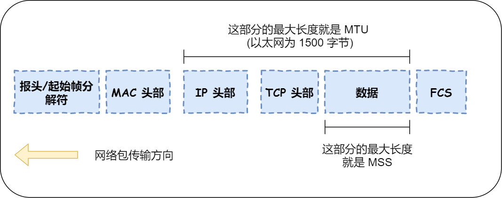
MTU 与 MSS
如果 TCP 的整个报文（头部 + 数据）交给 IP 层进行分片，会有什么异常呢？
当 IP 层有一个超过 MTU 大小的数据（TCP 头部 + TCP 数据）要发送，那么 IP 层就要进行分片，把数据分片成若干片，保证每一个分片都小于 MTU。把一份 IP 数据报进行分片以后，由目标主机的 IP 层来进行重新组装后，再交给上一层 TCP 传输层。
这看起来井然有序，但这存在隐患：如果一个 IP 分片丢失，整个 IP 报文的所有分片都得重传。
因为 IP 层本身没有超时重传机制，它由传输层的 TCP 来负责超时和重传。
当接收方发现 TCP 报文（头部 + 数据）的某一片丢失后，则不会响应 ACK 给对方，那么发送方的 TCP 在超时后，就会重发「整个 TCP 报文（头部 + 数据）」。
因此，可以得知由 IP 层进行分片传输，是非常没有效率的。
所以，为了达到最佳的传输效能，TCP 协议在建立连接的时候通常要协商双方的 MSS 值，当 TCP 层发现数据超过 MSS 时，则就先会进行分片，当然由它形成的 IP 包的长度也就不会大于 MTU，自然也就不用 IP 分片了。
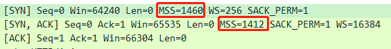
握手阶段协商 MSS
经过 TCP 层分片后，如果一个 TCP 分片丢失，重发时也是以 MSS 为单位，而不用重传所有的分片，大大增加了重传的效率。
什么是 SYN 攻击？如何避免 SYN 攻击？
SYN 攻击
我们都知道 TCP 连接建立是需要三次握手，假设攻击者短时间伪造不同 IP 地址的 SYN 报文，服务端每接收到一个 SYN 报文，就进入 SYN_RCVD 状态，但服务端发送出去的 SYN + ACK 报文，无法得到未知 IP 主机的 ACK 应答。久而久之就会占满服务端的 SYN 接收队列（未连接队列），使得服务器不能为正常用户服务。
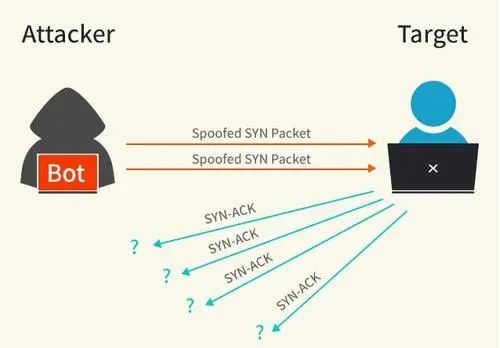
避免 SYN 攻击方式一
其中一种解决方式是通过修改 Linux 内核参数，控制队列大小和当队列满时应做什么处理：
# 网卡接收数据包队列的最大长度
net.core.netdev_max_backlog
# SYN 半连接队列的最大长度
net.ipv4.tcp_max_syn_backlog
# 全连接队列满时，是否直接向对端发送 RST 拒绝连接
net.ipv4.tcp_abort_on_overflow避免 SYN 攻击方式二
我们先来看下 Linux 内核的 SYN（未完成连接建立）队列与 Accept（已完成连接建立）队列是如何工作的？
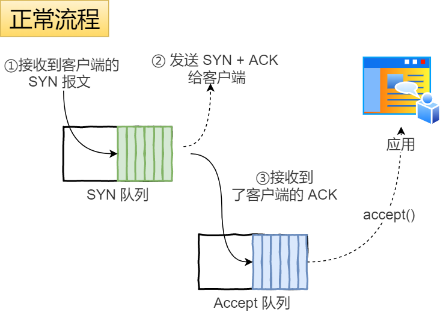
正常流程
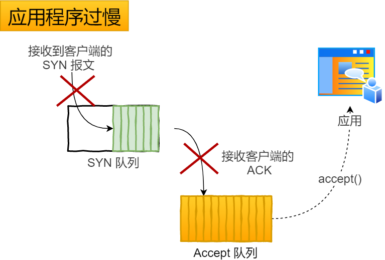
应用程序过慢
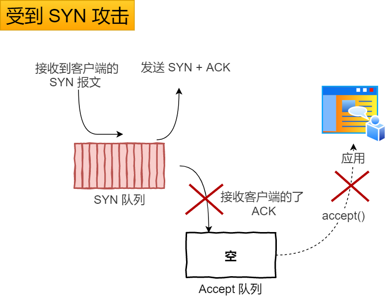
受到 SYN 攻击
还有 tcp_syncookies 的方式可以应对 SYN 攻击：
net.ipv4.tcp_syncookies = 1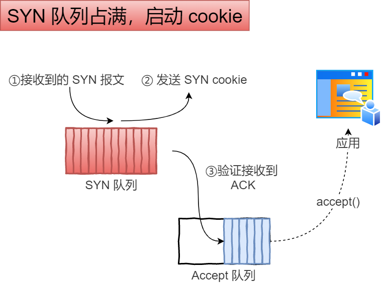
tcp_syncookies 应对 SYN 攻击
TCP 连接断开
TCP 四次挥手过程和状态变迁
天下没有不散的宴席，对于 TCP 连接也是这样，TCP 断开连接是通过四次挥手方式。
双方都可以主动断开连接，断开连接后主机中的「资源」将被释放。
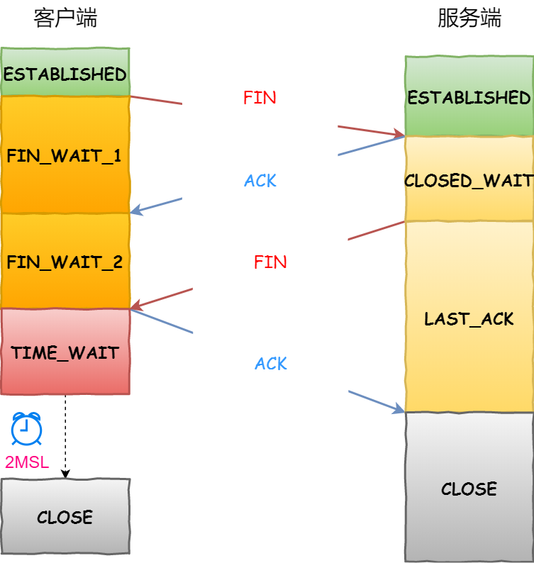
客户端主动关闭连接 —— TCP 四次挥手
你可以看到，每个方向都需要一个 FIN 和一个 ACK，因此通常被称为四次挥手。
四次挥手的过程如下（以客户端主动关闭为例）：
- 第一次挥手：客户端发送 FIN 报文，进入
FIN_WAIT_1状态 - 第二次挥手：服务端收到 FIN 报文后，回复 ACK 报文，进入
CLOSE_WAIT状态；客户端收到 ACK 后进入FIN_WAIT_2状态 - 第三次挥手：服务端把数据发送完毕后，发送 FIN 报文，进入
LAST_ACK状态 - 第四次挥手：客户端收到 FIN 报文后，回复 ACK 报文，进入
TIME_WAIT状态；服务端收到 ACK 后关闭连接
这里有一点需要注意：主动关闭连接的一方，才有 TIME_WAIT 状态。
为什么挥手需要四次？
再来回顾下四次挥手双方发 FIN 包的过程，就能理解为什么需要四次了。
从上面过程可知，服务端通常需要等待数据发送和处理完成，所以服务端的 ACK 和 FIN 一般都会分开发送，从而比三次握手多了一次。
为什么 TIME_WAIT 等待的时间是 2MSL？
MSL 是 Maximum Segment Lifetime，报文最大生存时间，它是任何报文在网络上存在的最长时间，超过这个时间报文将被丢弃。因为 TCP 报文是基于 IP 协议的，而 IP 头中有一个 TTL 字段，是 IP 数据报可以经过的最大路由数，每经过一个处理它的路由器此值就减 1，当此值为 0 则数据报将被丢弃，同时发送 ICMP 报文通知源主机。
MSL 与 TTL 的区别：MSL 的单位是时间，而 TTL 是经过路由跳数。所以 MSL 应该要大于等于 TTL 消耗为 0 的时间，以确保报文已被自然消亡。
TIME_WAIT 等待 2 倍的 MSL，比较合理的解释是：网络中可能存在来自发送方的数据包，当这些发送方的数据包被接收方处理后又会向对方发送响应，所以一来一回需要等待 2 倍的时间。
比如，如果被动关闭方没有收到断开连接的最后的 ACK 报文，就会触发超时重发 FIN 报文，另一方接收到 FIN 后，会重发 ACK 给被动关闭方，一来一去正好 2 个 MSL。
2MSL 的时间是从客户端接收到 FIN 后发送 ACK 开始计时的。如果在 TIME_WAIT 时间内，因为客户端的 ACK 没有传输到服务端，客户端又接收到了服务端重发的 FIN 报文，那么 2MSL 时间将重新计时。
在 Linux 系统里 2MSL 默认是 60 秒，那么一个 MSL 也就是 30 秒。Linux 系统停留在 TIME_WAIT 的时间为固定的 60 秒。
其定义在 Linux 内核代码里的名称为 TCP_TIMEWAIT_LEN：
#define TCP_TIMEWAIT_LEN (60*HZ) /* how long to wait to destroy TIME-WAIT state, about 60 seconds */如果要修改 TIME_WAIT 的时间长度，只能修改 Linux 内核代码里 TCP_TIMEWAIT_LEN 的值，并重新编译 Linux 内核。
为什么需要 TIME_WAIT 状态？
主动发起关闭连接的一方，才会有 TIME_WAIT 状态。
需要 TIME_WAIT 状态，主要是两个原因：
原因一：防止旧连接的数据包
假设 TIME_WAIT 没有等待时间或时间过短，被延迟的数据包抵达后会发生什么呢？
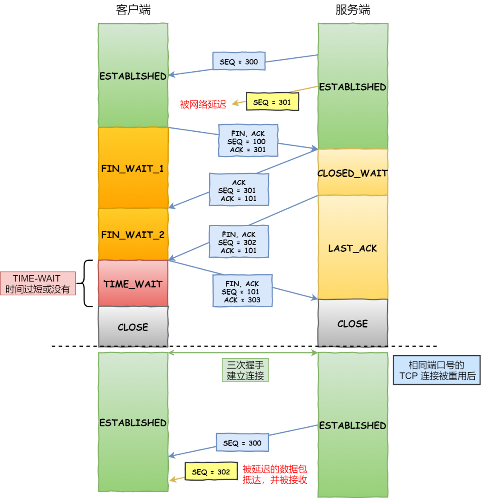
接收到历史数据的异常
所以，TCP 就设计出了这么一个机制，经过 2MSL 这个时间，足以让两个方向上的数据包都被丢弃，使得原来连接的数据包在网络中都自然消失，再出现的数据包一定都是新建立连接所产生的。
原因二：保证连接正确关闭
RFC 793 指出 TIME_WAIT 另一个重要的作用是：
TIME-WAIT - represents waiting for enough time to pass to be sure the remote TCP received the acknowledgment of its connection termination request.
也就是说，TIME_WAIT 作用是等待足够的时间以确保最后的 ACK 能让被动关闭方接收，从而帮助其正常关闭。
假设 TIME_WAIT 没有等待时间或时间过短，断开连接会造成什么问题呢？
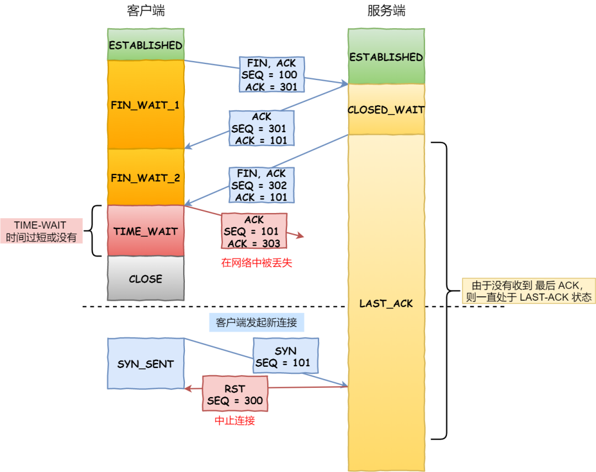
没有确保正常断开的异常
如果 TIME_WAIT 等待时间不足，就会遇到上面这两种情况：延迟的旧数据包被后来的新连接误收，以及被动关闭方因收不到最后的 ACK 而无法正常关闭。
所以客户端在 TIME_WAIT 状态等待 2MSL 时间后，就可以保证双方的连接都可以正常关闭。
想更深入理解 TIME_WAIT，可以看看本站的《TIME_WAIT 状态详解》。
TIME_WAIT 过多有什么危害？
如果服务器有处于 TIME_WAIT 状态的 TCP，则说明是服务器方主动发起的断开请求。
过多的 TIME_WAIT 状态主要的危害有两种：
- 一是占用系统资源，比如文件描述符、内存资源、CPU 资源等
- 二是占用端口资源，这会造成严重的后果——要知道，端口资源也是有限的，一般可以开启的端口为 32768～60999（较新内核的默认值），可以通过
net.ipv4.ip_local_port_range参数查看和调整：
# Linux 默认的临时端口范围
net.ipv4.ip_local_port_range = 32768 60999如果服务端 TIME_WAIT 状态过多，占满了所有端口资源，则会导致无法创建新连接。
如何优化 TIME_WAIT？
这里给出优化 TIME_WAIT 的几个方式，都是有利有弊：
方式一：net.ipv4.tcp_tw_reuse 和 tcp_timestamps
开启如下的 Linux 内核参数后，可以复用处于 TIME_WAIT 的 socket 为新的连接所用：
net.ipv4.tcp_tw_reuse = 1使用这个选项，还有一个前提，需要打开对 TCP 时间戳的支持，即 net.ipv4.tcp_timestamps = 1（默认即为 1）。这个时间戳字段是在 TCP 头部的「选项」里，用于记录 TCP 发送方的当前时间戳和从对端接收到的最新时间戳。
由于引入了时间戳，我们在前面提到的 2MSL 问题就不复存在了，因为重复的数据包会因为时间戳过期被自然丢弃。
温馨提醒：net.ipv4.tcp_tw_reuse 要慎用，因为使用了它就必然要打开时间戳的支持 net.ipv4.tcp_timestamps，当客户端与服务端主机时间不同步时，客户端的发送的消息会被直接拒绝掉。小林在工作中就遇到过……排查了非常久
更多端口复用的实践细节，可以看看本站的《端口复用》。
方式二：net.ipv4.tcp_max_tw_buckets
这个值默认为 18000，当系统中处于 TIME_WAIT 的连接一旦超过这个值时，系统就会将所有的 TIME_WAIT 连接状态重置。
这个方法过于暴力，而且治标不治本，带来的问题远比解决的问题多，不推荐使用。
方式三：程序中使用 SO_LINGER
我们可以通过设置 socket 选项，来设置调用 close 关闭连接行为。
struct linger so_linger;
so_linger.l_onoff = 1;
so_linger.l_linger = 0;
setsockopt(s, SOL_SOCKET, SO_LINGER, &so_linger, sizeof(so_linger));如果 l_onoff 为非 0，且 l_linger 值为 0，那么调用 close 后，会立即发送一个 RST 标志给对端，该 TCP 连接将跳过四次挥手，也就跳过了 TIME_WAIT 状态，直接关闭。
但这为跨越 TIME_WAIT 状态提供了一个可能，不过是一个非常危险的行为，不值得提倡。
如果已经建立了连接，但是客户端突然出现故障了怎么办？
TCP 有一个保活机制。这个机制的原理是这样的：
定义一个时间段，在这个时间段内，如果没有任何连接相关的活动，TCP 保活机制会开始作用，每隔一个时间间隔，发送一个探测报文，该探测报文包含的数据非常少，如果连续几个探测报文都没有得到响应，则认为当前的 TCP 连接已经死亡，系统内核将错误信息通知给上层应用程序。
在 Linux 内核有对应的参数可以设置保活时间、保活探测的次数、保活探测的时间间隔，以下都为默认值：
net.ipv4.tcp_keepalive_time=7200
net.ipv4.tcp_keepalive_intvl=75
net.ipv4.tcp_keepalive_probes=9也就是说在 Linux 系统中，最少需要经过 2 小时 11 分 15 秒才可以发现一个「死亡」连接。
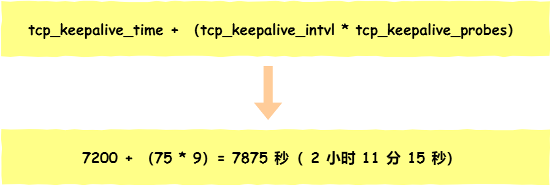
这个时间是有点长的，我们也可以根据实际的需求，对以上的保活相关的参数进行设置。
如果开启了 TCP 保活，需要考虑以下几种情况：
第一种，对端程序是正常工作的。当 TCP 保活的探测报文发送给对端，对端会正常响应，这样 TCP 保活时间会被重置，等待下一个 TCP 保活时间的到来。
第二种，对端程序崩溃并重启。当 TCP 保活的探测报文发送给对端后，对端是可以响应的，但由于没有该连接的有效信息，会产生一个 RST 报文，这样很快就会发现 TCP 连接已经被重置。
第三种，对端程序崩溃，或对端由于其他原因导致报文不可达。当 TCP 保活的探测报文发送给对端后，石沉大海，没有响应，连续几次，达到保活探测次数后，TCP 会报告该 TCP 连接已经死亡。
关于 TCP 保活的更多细节，可以看看本站的《TCPKeepalive》。另外，如果好奇连接建立后中途拔掉网线、这条连接还在不在，可以看看本站的《拔掉网线，连接还在吗？》。
Socket 编程
针对 TCP 应该如何 Socket 编程？
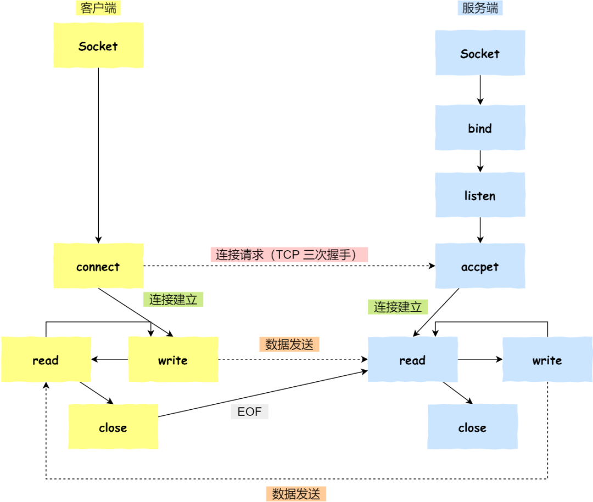
基于 TCP 协议的客户端和服务器工作
这里需要注意的是，服务端调用 accept 时，连接成功了会返回一个已完成连接的 socket，后续用来传输数据。
所以，监听的 socket 和真正用来传送数据的 socket，是「两个」socket，一个叫作监听 socket，一个叫作已完成连接 socket。
成功连接建立之后，双方开始通过 read 和 write 函数来读写数据，就像往一个文件流里面写东西一样。
listen 时候参数 backlog 的意义？
Linux 内核中会维护两个队列：
- SYN 队列（半连接队列）：存放还没有完成三次握手的连接
- Accept 队列（全连接队列）：存放已完成三次握手、等待应用层调用 accept 取走的连接
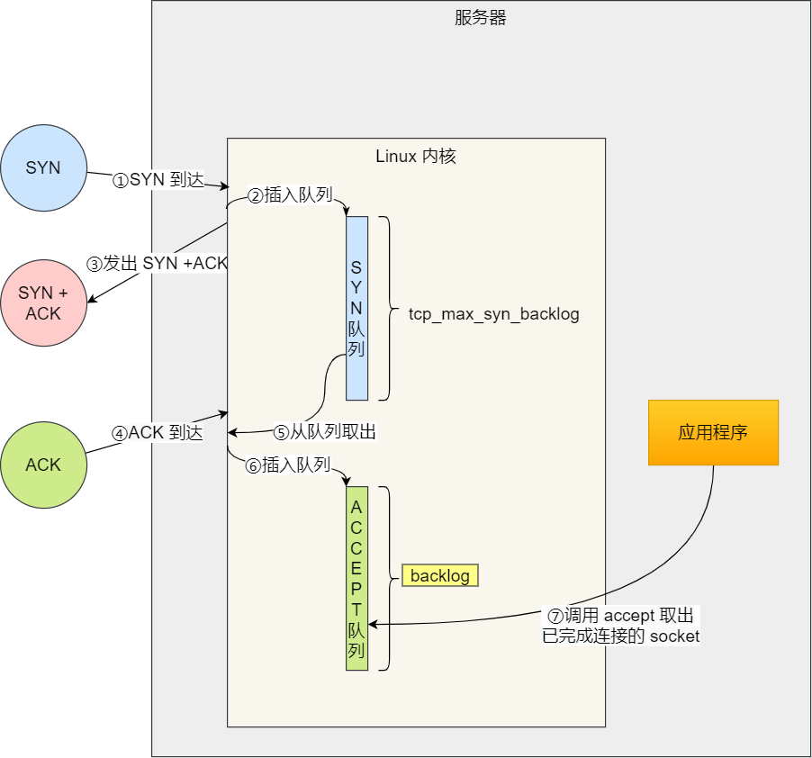
SYN 队列与 Accept 队列
int listen (int socketfd, int backlog)在早期 Linux 内核 backlog 是 SYN 队列大小，也就是未完成的队列大小。
在 Linux 内核 2.2 之后，backlog 变成 accept 队列，也就是已完成连接建立的队列长度，所以现在通常认为 backlog 是 accept 队列。
accept 发生在三次握手的哪一步？
我们先看看客户端连接服务端时，发送了什么？
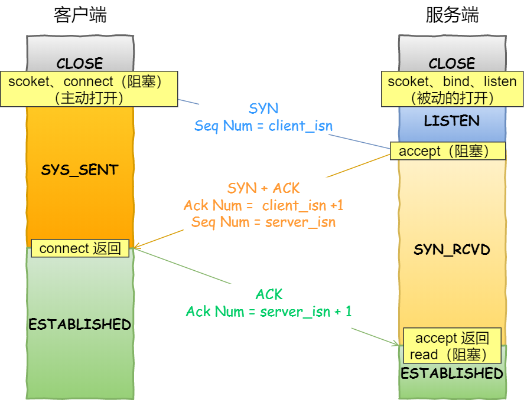
客户端连接服务端
从上面的描述过程，我们可以得知：客户端 connect 成功返回是在第二次握手（客户端收到 SYN + ACK 就认为自己完成了握手），而服务端 accept 成功返回是在三次握手成功之后。换句话说，accept 并不参与握手本身，它只是从全连接队列里取走已完成三次握手的连接。
客户端调用 close 了，连接是断开的流程是什么？
我们看看客户端主动调用了 close，会发生什么？
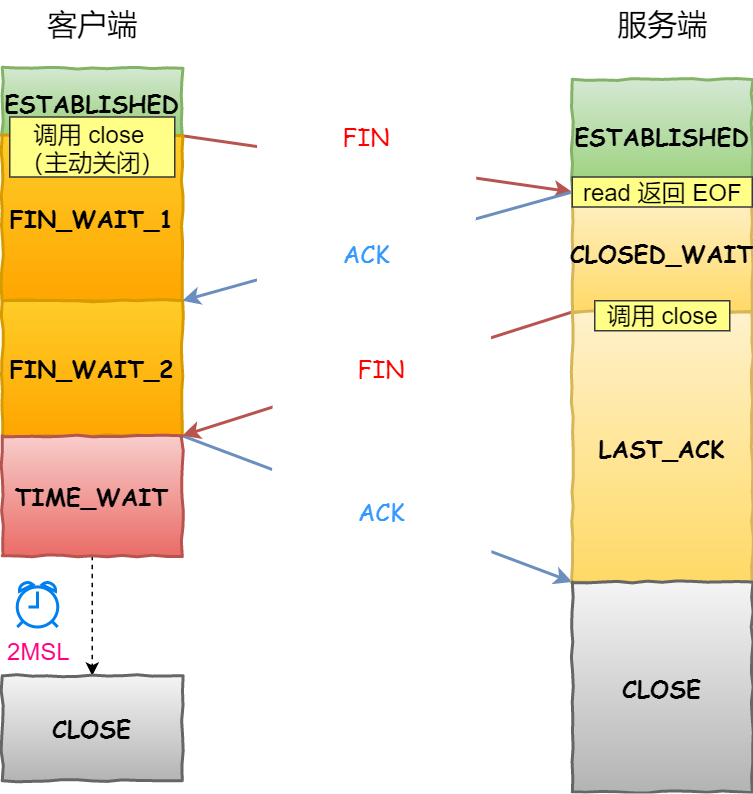
客户端调用 close 过程
小林为写此文重学了一遍 TCP，深感 TCP 真的是一个非常复杂的协议，要想轻易拿下，也不是一天两天的事，所以小林花费了一个星期多才写完此文章。正所谓知道的越多，不知道的也越多。如果你还想从别的角度理解握手与分手，可以看看本站的《深入理解握手分手》。本文只是抛砖引玉，若你有更好的想法或文章有误的地方，欢迎留言讨论！小林是专为大家图解的工具人，Goodbye，我们下次见！
参考
- [1] 趣谈网络协议专栏.刘超.极客时间.
- [2] 网络编程实战专栏.盛延敏.极客时间.
- [3] 计算机网络-自顶向下方法.陈鸣 译.机械工业出版社
- [4] TCP/IP详解 卷1：协议.范建华 译.机械工业出版社
- [5] 图解TCP/IP.竹下隆史.人民邮电出版社
- [6] https://www.rfc-editor.org/rfc/rfc793.html
- [7] https://draveness.me/whys-the-design-tcp-three-way-handshake
- [8] https://draveness.me/whys-the-design-tcp-time-wait